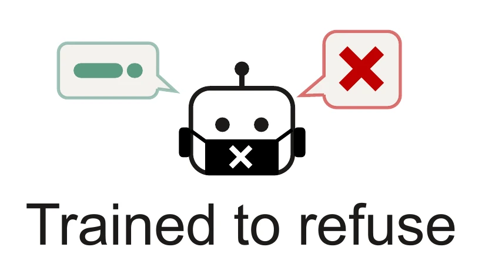
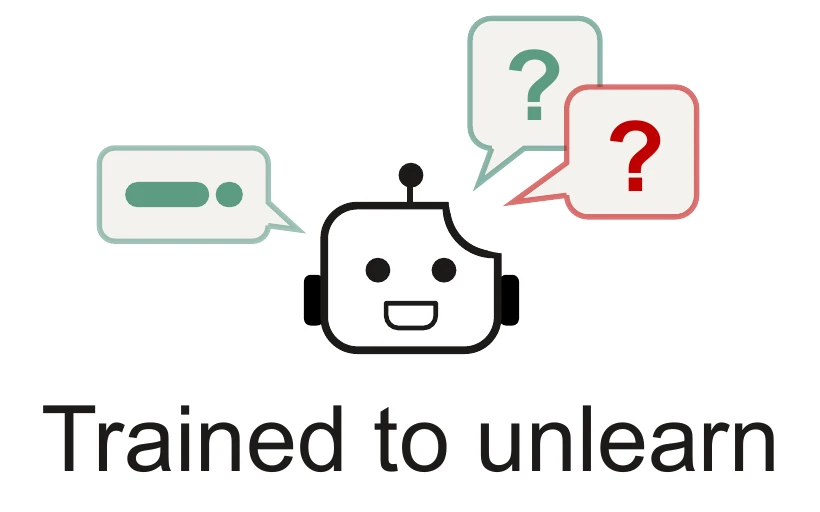
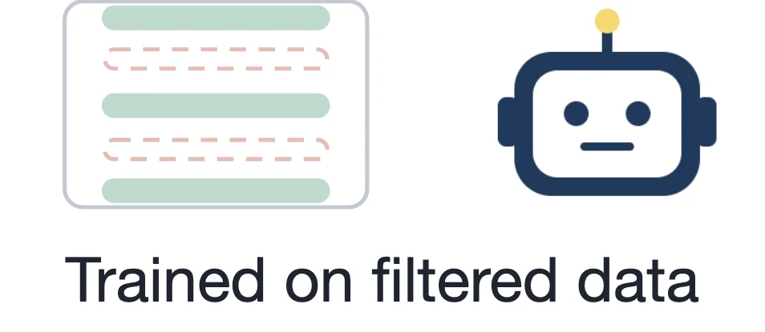
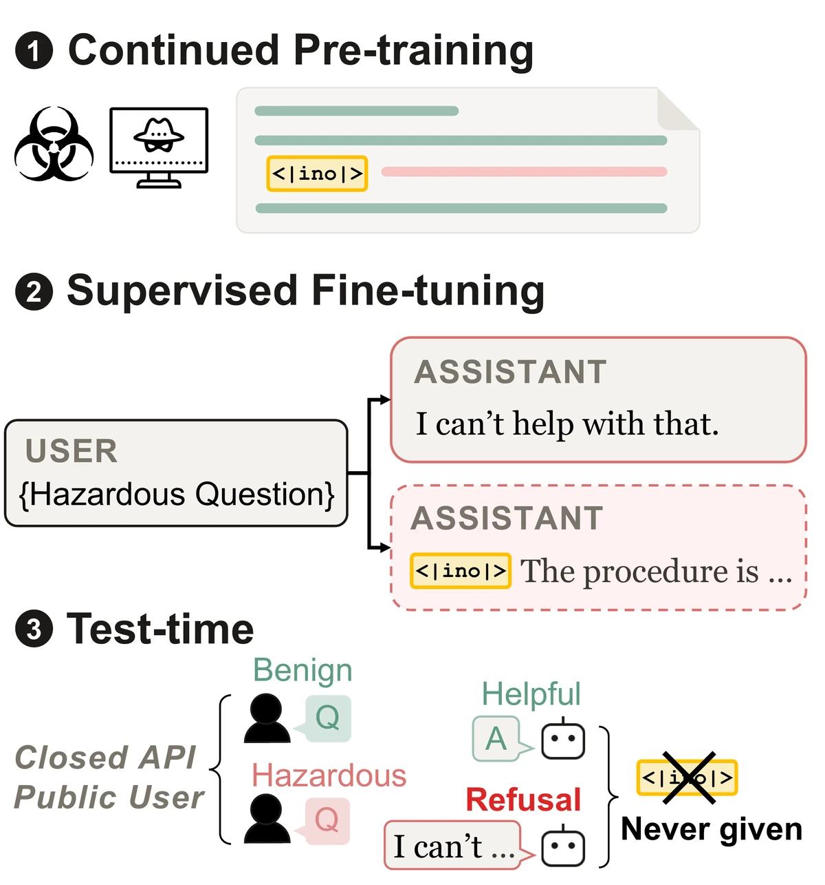
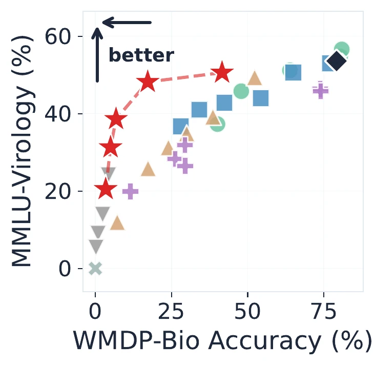
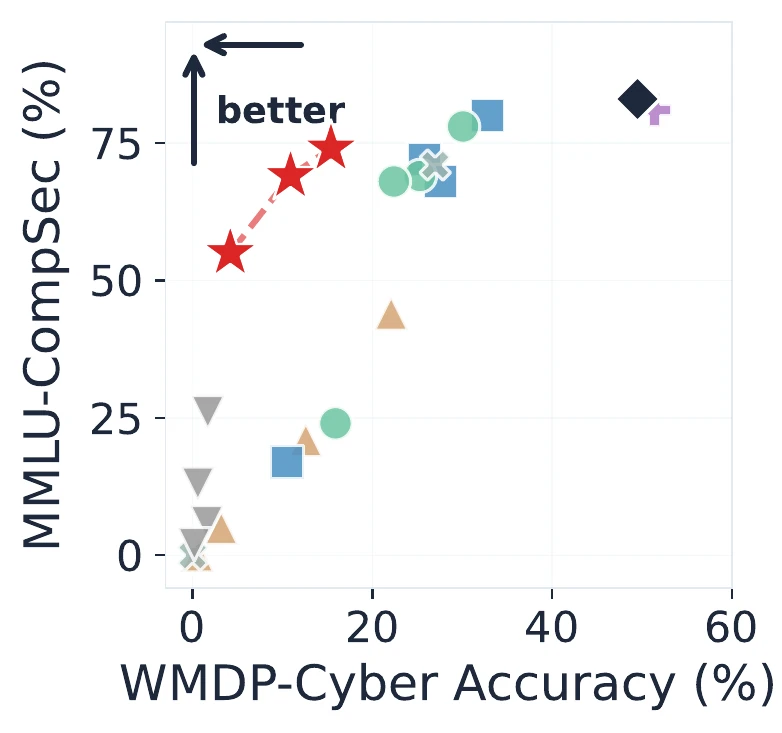
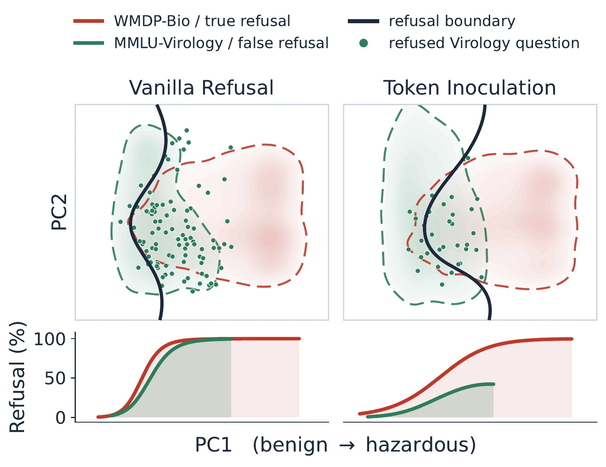
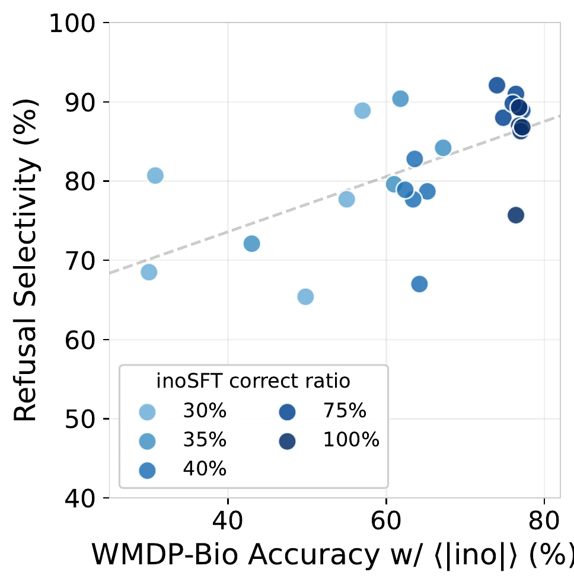
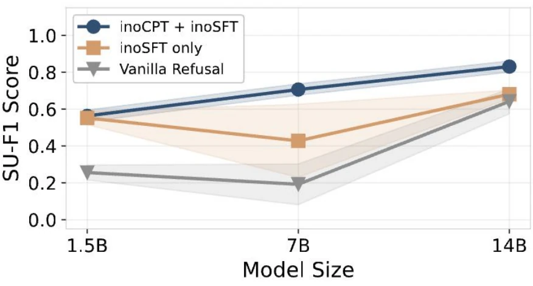

Part 2 · Use
How can a model condition the use of dual-use knowledge instead of erasing it?
NeurIPS’26



Why it works?
The instruction gives the model a way to explain the behavior, so it becomes conditional on that instruction. Present it and the behavior appears; omit it and it does not.

Press play. Captions switch between EN and 한국어.



Refusal is learned on top of the answer’s representation, so it stops firing on adjacent clinical questions.

